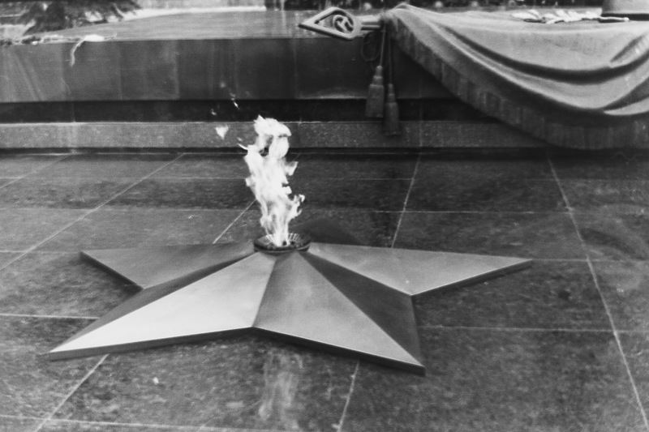
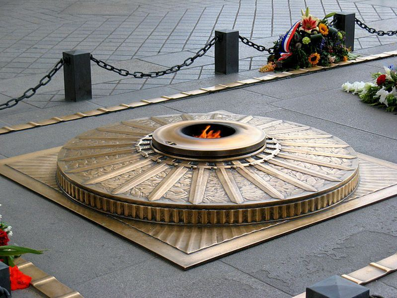
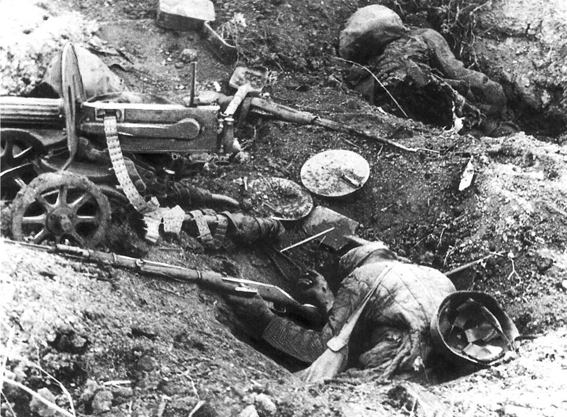
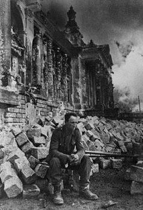
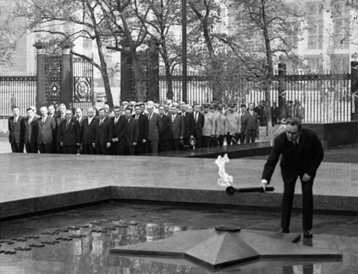
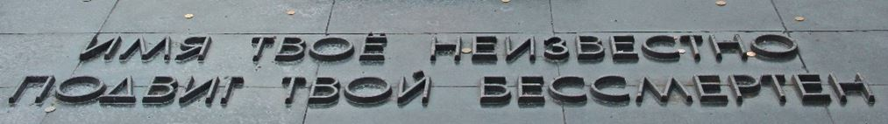
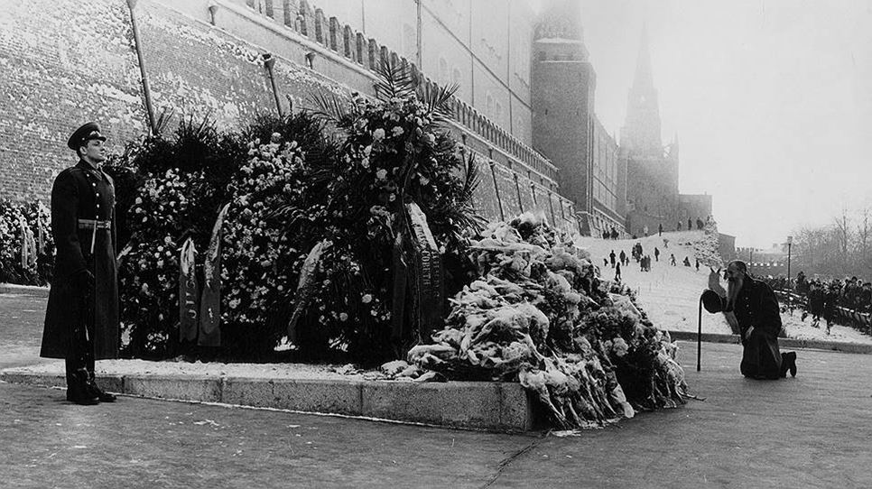
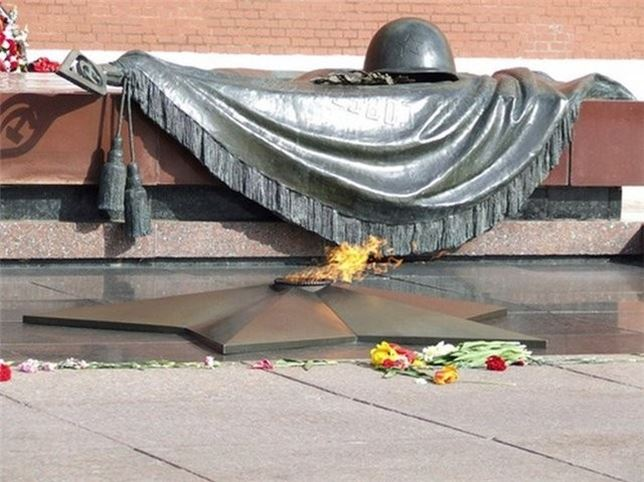
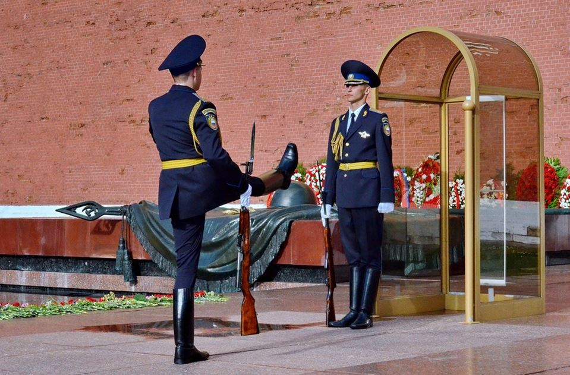

Il y a 50 ans, le 8 mai 1967, près du mur du Kremlin, sur la tombe du Soldat inconnu, on a mis la Flamme éternelle dans la mémoire des héros tombés pendant la Grande Guerre Patriotique.
La tradition de maintenir la Flamme éternelle dans des brûleurs spéciaux des monuments, des ensembles, des cimetières, des tombes remonte au culte antique de Vesta. Le 1er mars de chaque année le grand prêtre enflammait dans son temple principal, au Forum Romain, le feu sacré que les prêtresses vestales devaient maintenir 24 heures sur 24 au cours de l'année.
Dans la nouvelle histoire la flamme éternelle a été allumée pour la première fois en France à Paris, le 11 novembre 1920, sous l'arc de Triomphe de la place de l’Étoile sur la tombe du Soldat inconnu, où ont été inhumés les restes de soldat français tué dans les combats de la Première Guerre Mondiale. Le feu dans le mémorial est apparu plus tard deux ans après son ouverture. En 1921, le sculpteur français Grégoire Calvet a proposé d’équiper un monument d’un brûleur à gaz spécial, qui permettrait d'éclairer un tombeau dans l'obscurité. Cette idée a été activement soutenue par le journaliste Gabriel BOISSY, en octobre 1923.
La flamme sacrée sous l'arc de Triomphe fut ainsi allumée pour la première fois le 11 novembre 1923 à 18 heures par André MAGINOT, ministre de la Guerre, tandis que les troupes du 5e régiment d'infanterie présentaient les armes et que la musique jouait la Marche funèbre de CHOPIN. Le 81e régiment d'infanterie de ligne (surnommé « régiment de la flamme ») ranimait chaque année, en déléguant un piquet d'honneur, la flamme du Soldat inconnu. Ce régiment, transféré à Montpellier en 1983 et devenu régiment de manœuvre de l'École d'application de l'infanterie, a été dissous en 1995.
La sépulture se compose d'une dalle de granit de Vire sur laquelle est inscrite une épitaphe, entourée de bornes de métal noir reliées entre elles par des chaînes. Après la Seconde Guerre mondiale, les Alliés font don à la France d'un bouclier de bronze portant en son cœur un glaive enflammé, à la gloire des armées françaises et en mémoire de la Libération de Paris afin qu'il soit apposé à l'entrée du mémorial.

La flamme jaillit d'une gueule de canon placée au centre d'un bouclier de bronze, d'où rayonne une frise de glaives ciselés
Chaque année, le 9 mai, des Moscovites vont vers la Flamme éternelle pour adorer la tombe du Soldat Inconnu russe. Cependant, il y a peu de personnes qui se rappellent ceux qui ont créé ce mémorial. Il leur semble qu'il existait depuis toujours. Cependant, son histoire d’inflammation est extrêmement dramatique. Il y a eu des larmes et une tragédie.
En décembre 1966, Moscou se préparait à célébrer le 25e anniversaire de la Défense de Moscou. À cette époque, le premier secrétaire du Comité municipal du Parti communiste était Nikolaï Grigorievitch EGORYTCHEV. L'homme avait joué un rôle de premier plan dans la politique, y compris dans la situation dramatique de la suppression de KHROUCHTCHEV et de l'élection de BREJNEV au poste de Secrétaire général. Il était l'un des communistes réformateurs.
L’anniversaire solennel de la Victoire sur le fascisme commençait à être célébrer seulement à partir de 1965, lorsque Moscou a reçu le titre de la Ville-héros et le 9 mai est depuis officiellement devenu un jour férié. En fait, en ce temps-là, l'idée de créer un monument aux simples soldats, ayant donné leurs vies pour Moscou, est née. Cependant EGORYTCHEV a compris que ce monument ne devait pas être seulement pour Moscou, mais être du niveau national.
Au début de l’année 1966, Alekseï Nikolaïevitch KOSSYGUINE, Président du Conseil des Ministres de l’URSS, a téléphoné à Nikolaï EGORYTCHEV et a dit : « J’étais récemment en Pologne et j’ai déposé une couronne sur la tombe du Soldat inconnu. Pourquoi il n’y a pas de tel monument à Moscou ?» - « Oui, - répond EGORYTCHEV - nous sommes juste à y penser maintenant ». Et Kossyguine a aimé cette idée. Lorsque le travail sur le projet a été terminé, il fut nécessaire de le présenter à Leonid Ilitch BREJNEV. Malheureusement, à ce moment-là, BREJNEV était absent, alors EGORYTCHEV est allé au Comité central chez Mikhaïl SOUSLOV, l’idéologue soviétique, membre du Bureau politique et du Secrétariat du Parti communiste de l'Union soviétique, pour présenter les croquis.
M. SOUSLOV a également approuvé le projet. Bientôt BREJNEV est revenu à Moscou. Il a assez froidement accueilli le dirigeant de Moscou. Apparemment, il avait appris qu’EGORYTCHEV avait exposé le projet à KOSSYGUINE et SOUSLOV avant lui. BREJNEV, bien que pensant qu’il était nécessaire d’édifier un tel monument, était conscient que l'inauguration du monument, proche du cœur de chaque personne, renforcerait l’autorité personnelle d’EGORYTCHEV ce qu’il ne souhaitait pas du tout. Cependant, en dehors de la question du « combat des autorités », d'autres problèmes purement pratiques virent le jour. Et parmi eux le problème principal fut de trouver un lieu pour le monument.
Le « Jardin d’Alexandre » fut proposé mais BREJNEV repoussa la proposition : « Je ne l'aime pas le Jardin Alexandre, cherchez un autre endroit. ».
Deux ou trois fois Nikolay EGORYTCHEV, qui insistait sur le jardin Alexandre, près d’un ancien mur du Kremli, retenta, en vain, la proposition auprès du Secrétaire général. En ce temps-là, c’était un lieu en mauvais état, avec un gazon rabougri. Le mur nécessitait une restauration. Mais le plus grand obstacle était autre. Presque au même endroit, où brûle actuellement la Flamme éternelle, il y avait un Obélisque, érigé en 1913 pour le 300e anniversaire de la Maison ROMANOV. Après la révolution socialiste, les noms de la Maison régnante ont été raclés sur l'Obélisque et ceux des Titans de la Révolution ont été gravés.
La liste de noms aurait été personnellement rédigée par Lénine. Pour apprécier la suite, il faut rappeler que, à ce moment-là, de toucher quoi que ce soit associé à Lénine était une sédition monstrueuse. EGORYTCHEV a proposé aux architectes de ne pas demander la plus haute permission (car dans tous les cas elle n’aurait jamais été autorisée), et de déplacer doucement l'Obélisque un peu vers la droite où se trouve la grande grotte. Et personne ne le remarquera. Le plus drôle est qu’EGORYTCHEV avait raison. Si l’on avait dû coordonner le déplacement du monument de Lénine avec le Bureau politique, cela aurait pu prendre des années.
La dernière question, la plus importante : où chercher les restes d'un soldat ? A cette même époque, au cours d’un chantier dans la ville de Zelenograd, pendant une excavation, on trouva une tombe commune perdue depuis la guerre.
L’affaire a été confiée à Alexei Maximovich KALACHNIKOV secrétaire du comité municipal de BTP. Puis des questions encore plus difficiles se levèrent : de qui étaient les dépouilles enterrées dans la tombe ? Et si l’un des corps était d'un déserteur ? Ou celui d’un Allemand ?
Aujourd’hui, la question ne se poserait pas puisque l’on considérerait que toute dépouille est digne de la mémoire et de la prière. Pourtant, en 1965, la question est d’importance. Par conséquent, tous devaient être examinés. Finalement, le choix est tombé sur les restes d'un soldat dont l’uniforme militaire était bien conservé, mais sans insignes d’officier.
EGORYTCHEV justifiera ainsi le choix : « S’il avait été abattu comme un déserteur, sa ceinture aurait retirée. Il ne pouvait être blessé ou prisonnier, parce que les Allemands ne sont pas venus jusqu’à cet endroit. Il était donc très probable que ce soldat soviétique était mort héroïquement en défendant Moscou. Aucun document dans la tombe n’a été trouvé et la dépouille de ce soldat est vraiment sans identité ».
Les militaires ont alors mis au point un enterrement rituel solennel. La dépouille du soldat de Zelenograd a été acheminée à Moscou sur l’affût militaire. Le 6 décembre, tôt le matin, des centaines de milliers de Moscovites étaient dans la rue Gorki.
Des gens pleuraient quand le cortège funèbre passait devant eux. Beaucoup des vieilles faisaient des signes de croix. Dans un silence pesant, la procession est parvenue jusqu’à la Place du Manège. Le maréchal ROKOSSOVSKIY et des membres éminents du Parti communiste transportaient le cercueil durant les derniers mètres. La seule personne qui n'a pas été autorisé à transporter les restes, ce fut le maréchal JOUKOV qui était en disgrâce à cette époque-là...
Le 7 mai 1967, à Léningrad, la torche allumée de la Flamme éternelle au Champ de Mars a été transmis par le bâton de relais à Moscou. On dit que tout le chemin de Léningrad à Moscou représentait un couloir : des gens voulaient voir ce qui était sacré pour eux. Tôt le matin, le 8 mai, un cortège de voitures a atteint Moscou. Les rues étaient pleines de gens. Sur la place du Manège, Alexeï MARESSIEV, pilote légendaire, Héros de l'Union soviétique, a reçu la Torche. Des images d'archives uniques ont gardé ce moment. Des hommes pleuraient et des femmes priaient. Des gens se figèrent, en s’attachant à ne pas manquer le moment le plus important - l'éclairage de la Flamme éternelle.
Nikolay EGORYTCHEV a inauguré le Mémorial et Leonid BREJNEV a allumé la Flamme éternelle.
Depuis lors, chaque année le 9 mai, les gens viennent à la Flamme éternelle. Presque chacun connait les lignes gravées sur la plaque de marbre : « Ton nom est inconnu, ton exploit est immortel ». Pourtant personne ne sait qui l'auteur de ces lignes. Voilà comment tout s’est passé. Quand le Comité central de Parti communiste a approuvé la création de la Flamme éternelle, EGORYTCHEV a demandé aux grands écrivains littéraires russes - Sergei MIKHALKOV, Konstantin SIMONOV, Sergueï NAROVTCHATOV et Sergei SMIRNOV - d’inventer une épigraphe pour la tombe. Ils se sont arrêtés à ce texte : « Son nom est inconnu, son exploit est immortel ». Tous les écrivains ont apposé leur signature sur ces mots... et sont partis.
EGORYTCHEV est resté seul. Quelque chose dans la version finale ne lui convenait pas. « J’imaginais, se souvenait-il, quand les gens viendront à la tombe. Certains, ayant perdu des proches, viendront car ils ne savent pas où trouver la paix. Que diront-ils ? ». Peut-être : « Merci soldat, ton exploit est immortel ! »
Bien qu'il fasse nuit, EGORYTCHEV a téléphoné à Mikhalkov : « Le mot « son » devrait être remplacé par « ton » ».
Ainsi les mots gravés furent-ils gravés sur la plaque : « Ton nom est inconnu, ton exploit est immortel »...
Ce serait génial, si nous n'avions plus besoin d'écrire de nouvelles épigraphes sur les nouvelles tombes des soldats inconnus. Bien sûr, c’est une utopie. Un Grand a dit : « L’époque change, mais notre attitude à nos Victoires ne change pas ». En fait, nous, nos enfants et petits-enfants disparaîtront, mais la Flamme éternelle brûlera toujours.
DESCRIPTION DE LA TOMBE DU SOLDAT INCONNU EN RUSSIE
La Tombe du Soldat Inconnu (en russe : Могила Неизвестного Солдата) est un mémorial de guerre dédié aux soldats soviétiques tués durant la Grande Guerre patriotique (1941-1945). Il est situé à Moscou, sous les murs du Kremlin.
Cet ensemble funéraire abrite les restes d'un soldat inconnu tué durant la bataille de Moscou en 1941 et enterré dans une fosse commune au moment du conflit. Le transfert à Moscou des dépouilles de plusieurs soldats non-identifiés est effectué au mois de décembre 1966, à l'occasion des 25 ans de cette célèbre offensive. Le mémorial est officiellement dévoilé le 8 mai 1967 (veille du jour de la Victoire en Russie), en présence de Léonid BREJNEV, secrétaire général du Comité central du Parti communiste de l’Union soviétique. La flamme qui y brûle en permanence a été allumée à l'aide d'une torche issue de la Flamme éternelle du Champ de Mars de Léningrad (aujourd'hui Saint-Pétersbourg).
La tombe du Soldat inconnu a été dessinée par les architectes D. I. Bourdine, V. A. Klimov, Iou. Rabaïev, avec le concours du sculpteur N. V. Tomsky. Le mémorial, en granit rouge, est orné dans sa partie supérieure d'une sculpture en bronze représentant une feuille de laurier et un casque de soldat soviétique posé sur un drapeau, et dans sa partie inférieure d'une étoile soviétique à cinq branches où brûle la flamme du souvenir. Une épitaphe en bronze proclame « Имя твоё неизвестно, подвиг твой бессмертен » (Ton nom est inconnu, ton exploit est immortel).
À gauche du mémorial, un mur de granit porte l’épitaphe « 1941 Павшим за Родину 1945 » (1941 — à ceux qui sont tombés pour la Patrie — 1945), tandis qu'à droite, une allée bordée de petits édicules en porphyre rouge renfermant de la terre des villes héros (Léningrad, Stalingrad (Volgograd depuis 2004), Odessa, Sébastopol, Minsk, Kiev, Novorossiisk, Kertch, Brest-Litovsk et Toula) a été aménagée.
En 1997, une garde d'honneur (autrefois affectée au mausolée de Lénine) a été remise en service par une loi fédérale. Elle est assurée par le régiment du Kremlin.
QUELQUES FLAMMES ÉTERNELLES ENTRETENUES EN MÉMOIRE DE DRAMES HISTORIQUES :
Alger, dans le Sanctuaire du Martyr en mémoire d'une partie des martyrs de la guerre d'Algérie, ceux combattants pour l'indépendance.
Barcelone, au Fossar de les Moreres en mémoire des martyrs catalans qui ont défendu la ville des espagnols et français au siège de 1714.
Berlin, sur la place Theodor-Heuss, en mémoire de l'expulsion des Allemands d'Europe de l'Est.
Bruxelles, au pied du Colonne du Congrès.
Liverpool, dans le stade d'Anfield en mémoire des morts lors de Tragédie de Hillsborough.
Madrid, le Monumento a los Caídos por España, monument de ceux qui sont tombés pour l'Espagne, monument en hommage aux combattants franquistes.
Moscou et dans d'autres villes en Russie, flamme éternelle sur les tombes des soldats inconnus, pour les victimes de la guerre contre le fascisme.
New York, à Battery Park jouxtant la sculpture de La Sphère, en hommage aux victimes des attentats du 11 septembre 2001 contre le World Trade Center.
Paris, sous l'Arc de triomphe de l'Étoile, la première Flamme du souvenir des temps modernes éclaire la tombe du Soldat inconnu depuis 1923.
Paris, Mémorial de la Shoah, dans la crypte du souvenir des 6 millions de juifs victimes de la Shoah.
Rome, autel de la Patrie, sur la tombe du Soldat inconnu.
Skopje, en République de Macédoine, dans le monument des Héros tombés pour la Macédoine.
Sofia sur la place de la cathédrale Alexandre-Nevski de Sofia en l'honneur des soldats russes et bulgares tombés lors de la guerre russo-turque de 1877-1878.
Tsitsernakaberd à Erevan, pour les victimes du génocide arménien.
Yad Vashem à Jérusalem, en souvenir de la Shoah.
Washington, au Cimetière national d'Arlington où repose le président John Fitzgerald Kennedy.
G.K.
Cet article est basé sur des informations provenant de sources ouvertes.
Partager cette page